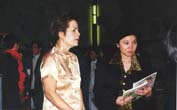

| Panorama d'événements |
Une abondance de gâteaux végétariens et d'autres mets délicieux sont exposés à la célébration en l'honneur du Jour de Maître Suprême Ching Hai au centre de Montréal. |
Plusieurs invités ont connu Maître par l'intermédiaire de cet événement. |
[Montréal] Afin de commémorer le sixième anniversaire du Jour de Maître Suprême Ching Hai, qui s'est tenu pour la première fois à Chicago le 22 février 1994, le centre de Montréal a organisé une journée portes ouvertes et un buffet végétarien après son habituelle méditation de groupe du dimanche. L'invitation a été très bien reçue et la réponse a dépassé toutes attentes : plusieurs initiés, pratiquants de la Méthode pratique, amis, famille ainsi que des invités spéciaux étaient présents pour ce joyeux événement. Les invités ont pris connaissance du travail charitable mondial de Maître en regardant des photos commentées, en visionnant des cassettes vidéo, et en lisant des magazines gratuits et des écrits documentaires des médias portant sur l'oeuvre de Maître. De délicieux plats végétariens, et cette fois-ci, de nombreux gâteaux étaient magnifiquement présentés. Des invités d'autres organisations ont déclaré que notre groupe était très bien organisé et discipliné, et qu'ils avaient peine à croire qu'en seulement quelques jours de préparation, un tel événement ait eu lieu. C'est à travers la grâce invisible de Maître ainsi que la dévotion des amis initiés locaux que cette journée portes ouvertes a été rendue possible.
Deux jours de retraite en plein air à Blue Springs à Milton, Ontario, Canada. |
[Toronto] Dans le quartier sud-ouest de Toronto, une devanture sans prétention, à moitié séparée, sur deux étages, est la maison du centre de l'Association internationale de Maître Suprême Ching Hai de Toronto. Des frères et soeurs (et quelques enfants) assistent régulièrement à des sessions de méditation et à des retraites. Les méditations de groupe sont normalement précédées d'une séance vidéo de Maître en anglais, traduite simultanément en au-Lacien avec écouteurs. Pour les annonces spéciales, une traduction en Chinois est souvent proposée.
Pour partager les enseignements de Maître et permettre aux habitants de Toronto de ressentir Son honnêteté, Son humour et Sa sagesse inspirée via des cassettes vidéo, nous avons organisé deux séminaires publics en 1999, l'un au Scarborough Metro Square Center et l'autre à la bibliothèque Brentwood de Toronto.
Pique-nique en juillet 1999 au Heart Lake Conservation. |
Durant l'été 1999, le centre de Toronto tenait un stand à la 15ème Foire annuelle de la Nourriture Végétarienne. Cette manifestation, sponsorisée par l'Association Végétarienne de Toronto, est une des plus vaste du genre dans l'hémisphère Nord. En 1999, le centre de Toronto, a aussi versé des contributions financières à des organisations caritatives locales. Pour commémorer le "Jour de Maître Suprême Ching Hai", des contributions ont été donné le 22 février et le 25 octobre, au bénéfice de "The United Way", l'Institut National Canadien pour les Non-Voyants, la Société Alzheimer, la Société multi-Scléroses, "The Easter Seal Society", "Covenant House" et "Interval House". De surcroît, le centre de Toronto a offert une aide financière pour les secours suite à de nombreux désastres à travers le monde, dont le conflit au Kosovo, les tremblements de terre en Turquie et à Formose, et les inondations en Inde et en Au-Lac. Enfin, les amis initiés de Toronto ont soutenu généreusement les sans-abri durant les vacances.
L'alimentation végétarienne est toujours un thème central des fêtes et retraites au centre de Toronto. D'ailleurs, nous avons eu beaucoup de chance au moment des échanges de recettes, les toutes dernières spécialités alimentaires à base de protéines végétales étaient disponibles, et des démonstrations de cuisine ont eu lieu. Nous chérissons nos volontaires cuisiniers !
Partager les enseignements de Maître à la Foire de l'Alimentation Végétarienne de Toronto. |
Alimentation et amusement étaient présents au pique-nique annuel du centre, en juillet 1999. Chacun, y compris les invités des centres d'Ottawa, de Londres et de Windsor qui étaient les bienvenus, se sont bien amusés lors des activités telles que volley, football, jeux pour enfants, parcours plein de défis à travers la forêt, et nage au bord d'une petite plage près de Toronto. Les conversations animées et les rires dominaient le tout. Parallèlement, nous pouvions constater dans tous ces domaines les bienfaits de notre style de vie enrichi de méditation. Les qualités les plus évidentes étaient le souci d'autrui et la coopération, l'absence d'égoïsme ou même d'ego, un amour vrai et une volonté de communication.
Le centre de Toronto représente une part importante de notre vie, même si nous n'y allons qu'une fois par semaine pour la méditation et le déjeuner. C'est là que nous recevons un soutien total ainsi que les fruits de l'engagement de notre groupe de membres sincères cherchant la Vérité. Ce sens de l'unification est devenu une puissante source d'inspiration pour nous tous. Le centre est devenu un microcosme, notre "petit paradis", où nos vies spirituelle, intellectuelle et physique se mêlent ensemble et brillent dans la plus constructive des lumières.
 [Vancouvert]Les amis initiés de Vancouver ont présenté des cassettes audio et vidéo de Maître, et des livrets-échantillons, le 12 février 2000, lors d'une célébration du nouvel an aulacien organisée par le Centre de la Communauté aulacienne. De nombreuses personnes sont venues s'informer sur les enseignements de Maître.